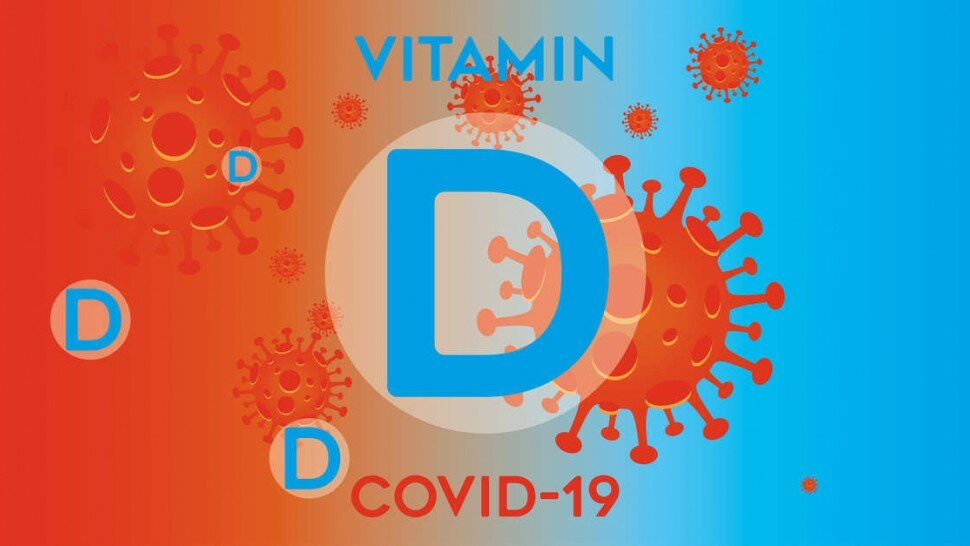

Vitamine D et Covid-19 : recommandations du Pr Justine Bacchetta

Le rôle bénéfique de la vitamine D sur la prévention de l’infection par le SARS-CoV-2 et des formes graves a été suggéré dans des études observationnelles. Plusieurs dizaines de médecins et des sociétés savantes nationales françaises viennent de prendre position sur ce sujet dans la Revue du Praticien. Parmi eux, le Professeur Justine Bacchetta, pédiatre au Centre de Référence des Maladies Rénales Rares et au Centre de Référence des Maladies Rares du Calcium et du Phosphore à l’Hôpital Femme Mère Enfant Bron de Lyon.

Rôle de la vitamine D
Supplémentation en vitamine D avant toute infection
Attention au surdosage en vitamine D
Faut-il prendre de la vitamine D en cette période de pandémie ?

Nous avons été plusieurs pédiatres à signer le manuscrit dans la Revue du Praticien, pour insister sur l’importance de la supplémentation en vitamine D non seulement pour les personnes âgées, les adultes mais aussi chez les enfants. Des recommandations officielles existent pour les enfants de 0 à 18 ans, ainsi que chez les personnes âgées, mais elles sont très peu respectées après l’âge de 18 mois. En effet, la supplémentation en vitamine D est recommandée en France dès les premiers jours de vie afin de prévenir le rachitisme. Elle doit être poursuivie pendant toute la phase de croissance et de minéralisation osseuse, c'est-à-dire jusqu'à 18 ans.
La vitamine D est synthétisée sous l’effet du soleil. Lors du premier confinement, les adultes et enfants sont beaucoup moins sortis qu’aux printemps précédents. De ce fait, nous avons remarqué plus de carences en vitamine D cet hiver. D’où l’importance de sensibiliser les médecins généralistes à cette carence. Car il y une saisonnalité de la vitamine D en fonction de l’exposition solaire.
Une supplémentation en vitamine D évite-t-elle les formes graves de la Covid-19 ?
Sources
- La Revue du Praticien janvier 2021 : https://www.larevuedupraticien.fr/article/effet-benefique-de-la-vitamine-d-dans-la-covid-quelles-sont-les-donnees
- Avis (27/01/2021) élaboré en concertation avec les sociétés savantes de pédiatrie , le Collège national des sages-femmes, les Centres antipoison et l'Anses. https://www.anses.fr/fr/content/vitamine-d-chez-l%E2%80%99enfant-recourir-aux-m%C3%A9dicaments-et-non-aux-compl%C3%A9ments-alimentaires-pour
- https://ansm.sante.fr/actualites/vitamine-d-chez-lenfant-recourir-aux-medicaments-et-non-aux-complements-alimentaires-pour-prevenir-le-risque-de-surdosage